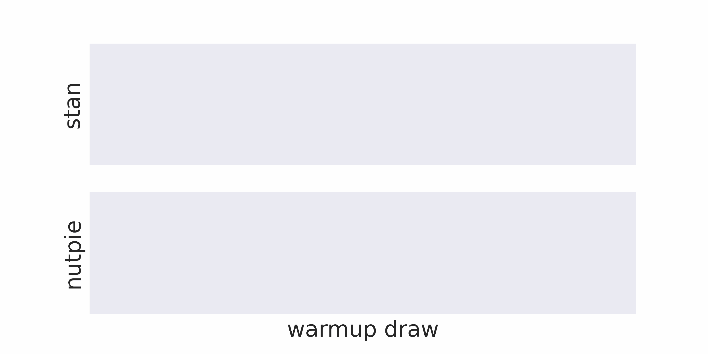

## Nutpie: Fast sampling with Stan, python and rust Adrian Seyboldt Notes: Nice to see you all! Like to show nutpie, which I have been working on for some time. Hopefully I can convince you to give it a go, it is on average 2x faster than Stan (*). Before I start talking about it I think I should explain how I ended up doing something so silly as writing a whole new sampler lib from scratch. I got into stats through stan. Wanted python -> pymc bad implement mass matrix adapt #I'm Adrian Seyboldt, core dev of PyMC (python lib for bayesian stats) #Work with PyMC Labs, consultency. todo pymc-labs logo --- ### Why a new sampler Default PyMC sampler can use some upgrades: - A lot of Python overhead - GIL can get in the way - Support multiple computational backends (jax, PyTorch, numba) - Improve mass matrix adaptation Notes: Stan -> PyMc mass matrix adapt (2017 in PyMC) -> Maybe updates for Stan? --- <img src="plots/logo.png" alt="Bridgestan Logo" width="20%"/> Low-level and fast interface to Stan models. Notes: Edward A. Roualdes Brian Ward Bob Carpenter todo ref to bridgestan paper --- ## Mass matrix adaptation <div class="r-stack"> <div class="fragment fade-out" data-fragment-index="0"> <img src="plots/mass_matrix_unscaled.png" alt="Unscaled posterior" width="60%"/> <p> Auto-remparametrization that rescales parameters. </p> </div> <div class="fragment current-visible" data-fragment-index="0"> <img src="plots/mass_matrix_stan.png" alt="Stan scaled posterior" width="60%"/> <p> Rescale so that variance is 1 </p> </div> <div class="fragment"> <img src="plots/mass_matrix_nutpie.png" alt="nutpie posterior" width="60%"/> <p> Rescale so that geomean(variance, 1/gradvar) is 1 </p> </div> </div> --- $$ \DeclareMathOperator*{\argmin}{argmin} \argmin_{\eta} \int \lVert \nabla \log N(\theta | 0, 1) - \nabla \log F^*_\eta \pi(\theta) \rVert^2 dF_\eta^*\pi(\theta) $$ $$ F_{\mu, \sigma}(x) = \text{diag}(\sigma)x + \mu \Rightarrow \text{Diagonal mass matrix} $$ $$ F_{\mu, L}(x) = Lx + \mu \Rightarrow \text{Full mass matrix} $$ --- - Mass matrix converges faster - Good properties for multivariate normal posteriors - Generalizes to full mass matrix or normalizing flows Try the experimental low-rank modified mass matrix adaptation! <!-- .element: class="fragment" data-frament-index="1" --> Notes: todo "Try..." später dazu --- ## Early tuning  Notes: todo remove orange --- <img src="plots/tuning_bias.png" alt="Tuning bias over time" width="80%"/> Notes: todo which model? --- ## Results from posteriordb Comparing sampler performance is hard! We compare effective sample size per second. todo ref to posteriordb Notes: todo title "Nutpie is on average 2x faster" --- <img src="plots/ecdf.png" alt="Speedup" width="80%"/> Notes: 85% nutpie faster 35% more than 2x as fast midian speedup 1.6 add ref to samplerlab repo --- ## Usage `pip install "nutpie[stan]"` and make sure C++ compiler is installed ```python import nutpie code = """ data { mu ... } """ compiled = nutpie.compile_stan_model(code=code) compiled = compiled.with_data(mu=1.) trace = nutpie.sample(compiled) ``` ---  --- ## Inspect trace ```python sampler = nutpie.sample(compiled, blocking=False) sampler.pause() sampler.resume() trace = sampler.inspect() sampler.wait(timeout=1) ``` --- Feedback and benchmarks welcome! @aseyboldt on discourse or github. Please report bugs if you see any! <img src="plots/nutpie-qr.png" alt="https://github.com/pymc-devs/nutpie" width="20%"/> https://github.com/pymc-devs/nutpie Questions? Notes: I hope I could make you curious. If you want to give it a go and try it, see QR code... Feedback and benchmarks welcome. Please report bugs --- ## Some extra sample stats - Mass matrix over time -> was the tuning period long enough? - Exact location of divergences -> better for parallel plots - Unconstrained draws and grads -> Easier to find posterior correlations and parametrization problems --- ### Why use nutpie for Stan models? <ul> <li class="fragment", data-fragment-index="0"> Faster mass matrix adaptation </li> <li class="fragment", data-fragment-index="0"> Avoid overhead for trace storage </li> <li class="fragment", data-fragment-index="1"> Sampler pausing </li> <li class="fragment", data-fragment-index="1"> Live inspection of the trace </li> <li class="fragment", data-fragment-index="2"> Extra sampler statistics </li> <li class="fragment", data-fragment-index="2"> Detailed progress info </li> <li class="fragment", data-fragment-index="3"> Compatible with arviz ecosystem to analyze traces </li> </ul> Notes: todo one after the other? ---